01 / Historical mechanics
Python prototype
A tick-based prototype made movement and combat inspectable before the native implementation.
Download video ↓From a Python prototype to native Rust battles, human-replay learning and a neural player that can look ahead before acting.
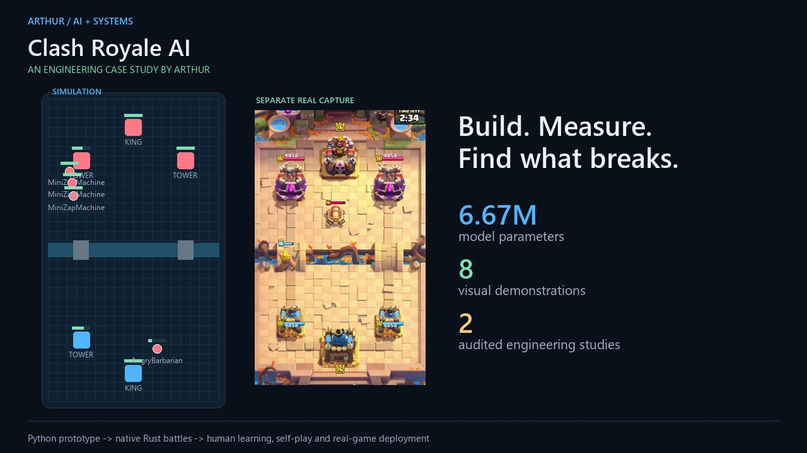
Watch the complete tour, then explore the pieces below. Everything is captioned; sound is optional.
Actual gameplay and policy traces sit alongside simplified diagrams. The labels identify what each visual demonstrates.
A tick-based prototype made movement and combat inspectable before the native implementation.
Download video ↓Watch actual native battle state: troops, towers, HP and the evolving board. Python remains the model and orchestration layer.
Download video ↓Troop coordinates and identity become a readable board. This route reads memory-derived state rather than a YOLO vision model.
Download video ↓The policy chooses an action type, a card and a conditional placement. The heatmap shows its real probability distribution after legality masking.
Download video ↓Compare candidate moves using their simulated futures and recorded scores. A public belief supplies unknown opponent state.
Download video ↓Recorded cards, placements and ability markers feed versioned Rust reconstruction. Supported components become imitation targets; uncertainty stays explicit.
Download video ↓Frozen opponents and exploiters provide challenges; paired evaluations measure whether a checkpoint improves and retains earlier skills.
Download video ↓Connect observation, policy and command execution. The search adapter has offline capture evidence; a fresh on-phone policy recording remains pending.
Download video ↓The battle engine, player model, training critic and deployment harness serve different roles. These diagrams make their connections explicit.
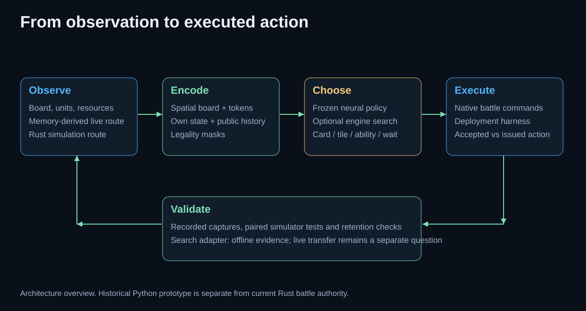
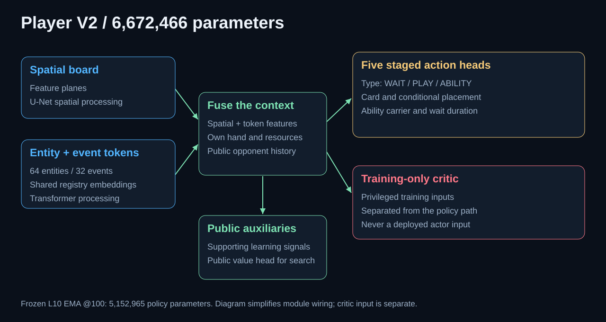
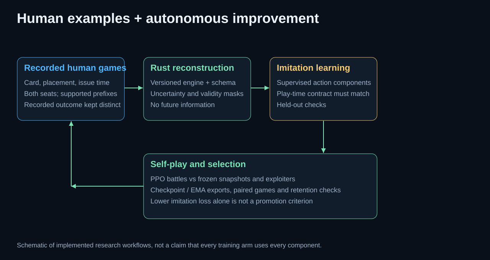
These are simulator comparisons with named checkpoints and uncertainty. They do not establish human-level or superhuman performance.
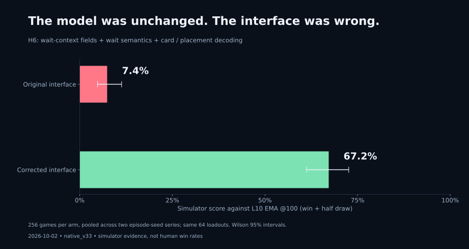
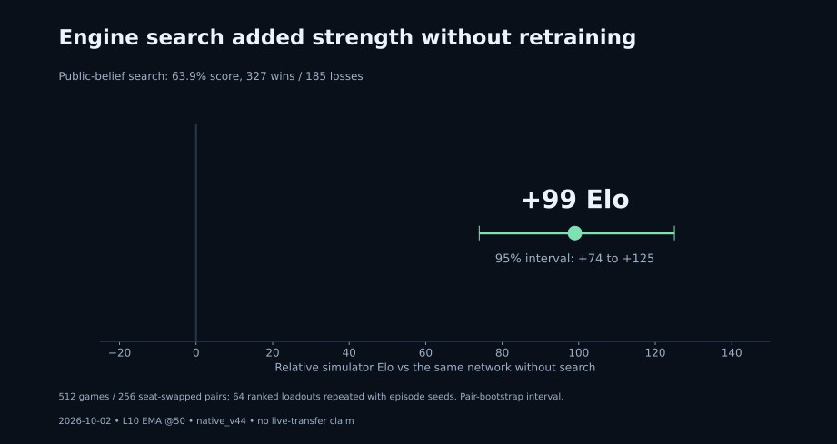
The interface study used H6 against L10 EMA @100 on native_v33. The search study used L10 EMA @50 on native_v44. New demonstration footage uses L10 EMA @100 on native_v45 with public-observation hardening enabled. Different checkpoints and interfaces are identified rather than conflated.
Repeated loadouts limit independence. Relative Elo is specific to each comparison. The real-game search adapter was tested offline on 103 captures; the footage here does not demonstrate a new live win rate. Superhuman play is the research objective, not an achieved claim.
Open an image to inspect the labels and recorded outputs.
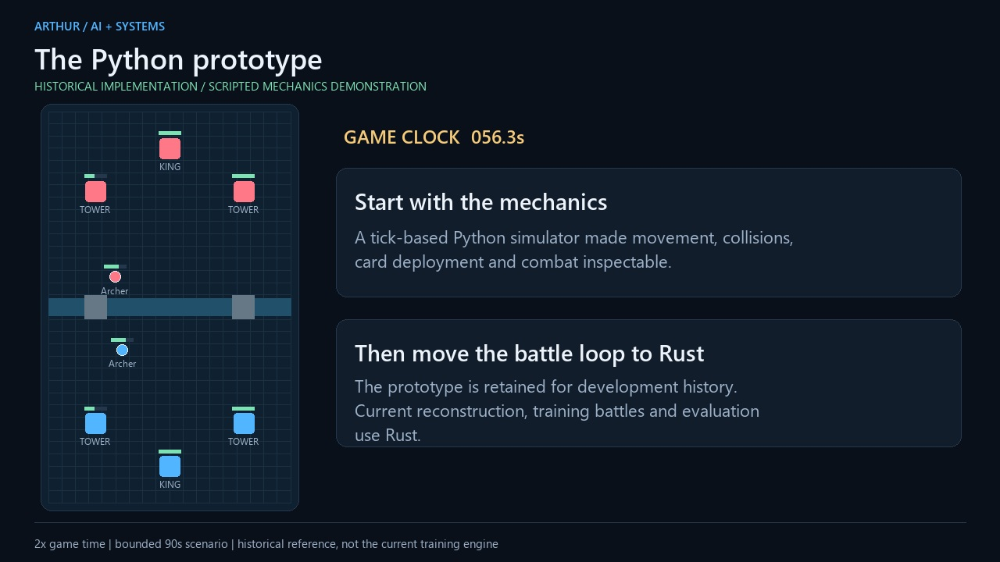
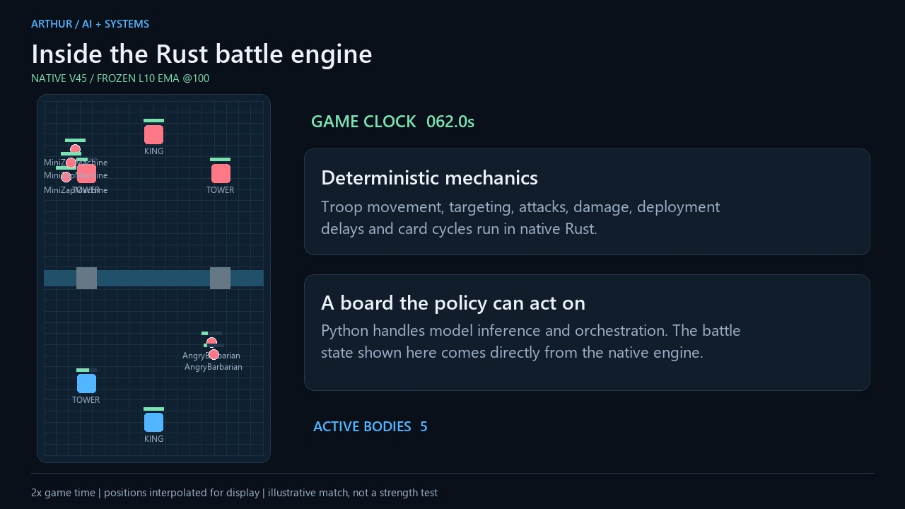
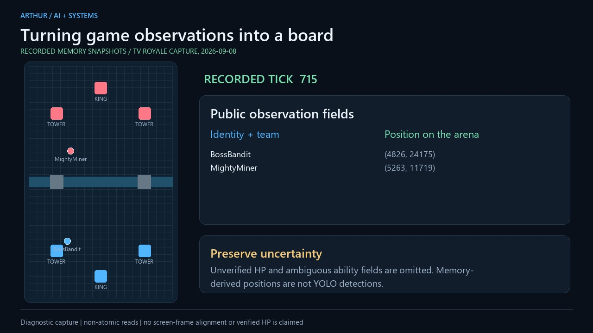
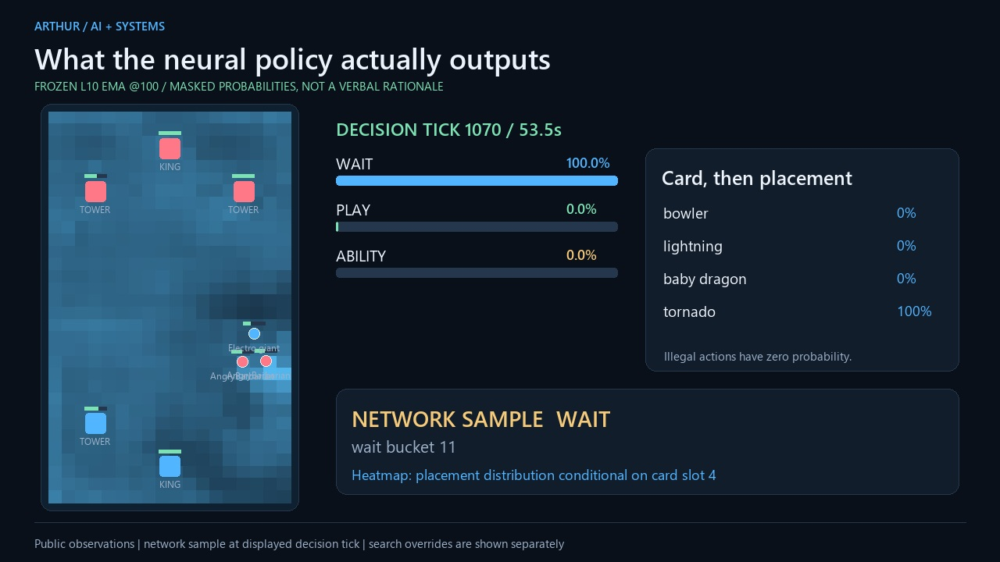
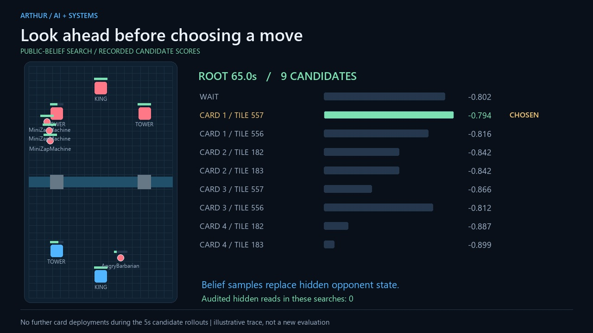
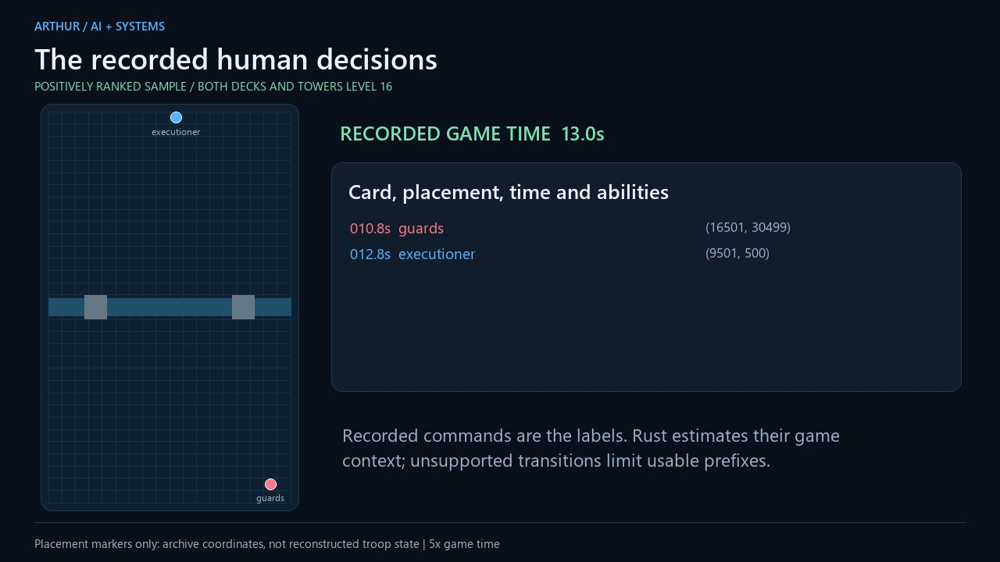
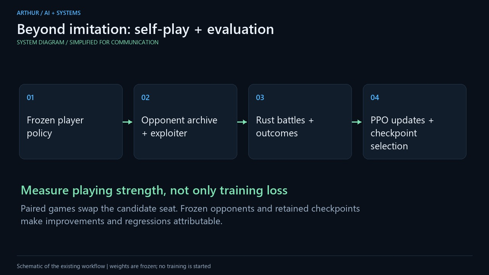
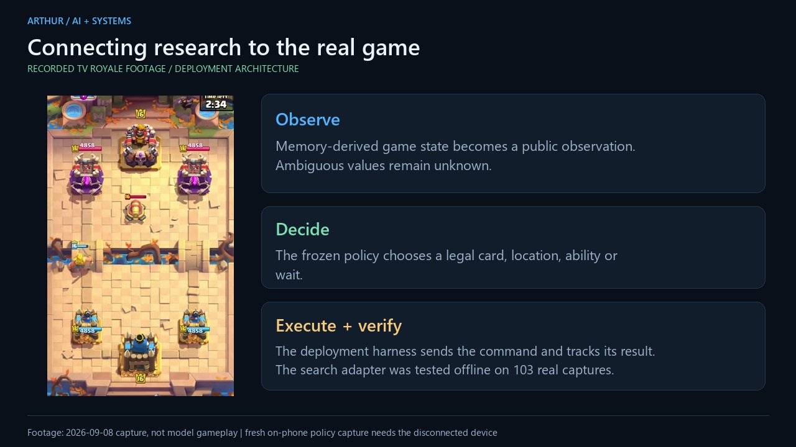
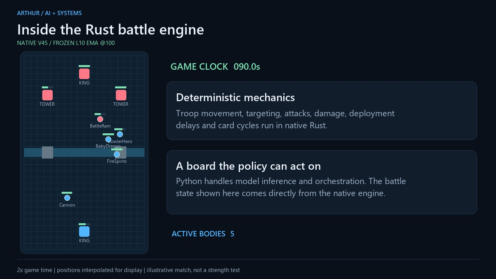
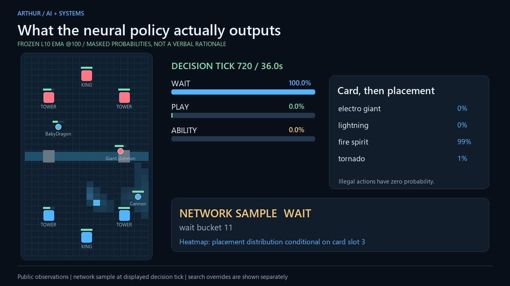
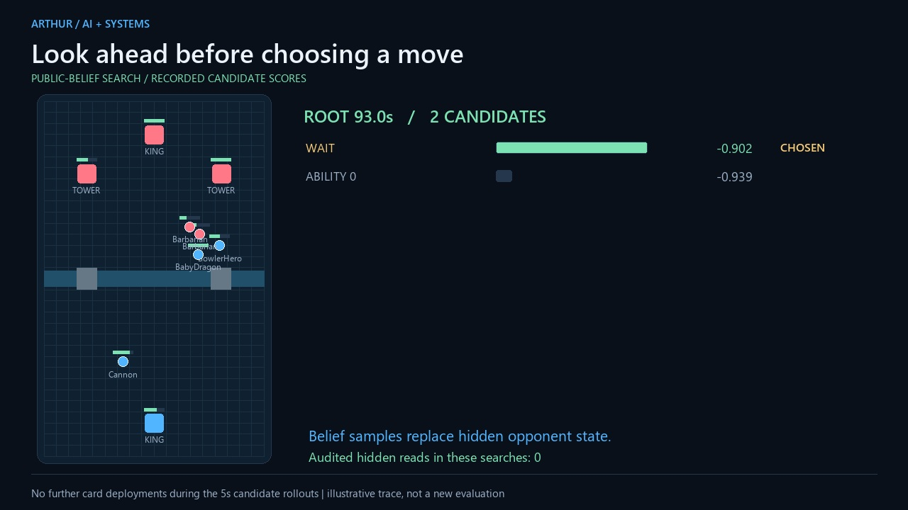
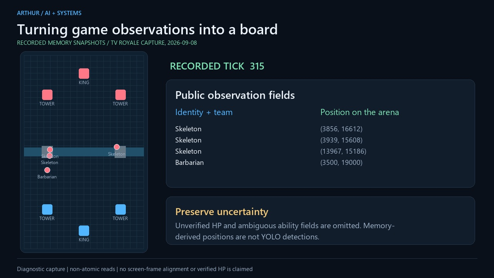
I lead the design, experiments, integration and validation: making the simulator inspectable, connecting it to learning, diagnosing failed results and measuring whether changes actually help.
The project combines systems engineering with practical machine-learning experimentation. Development includes AI-assisted coding and analysis; results are checked against retained artifacts.
The application code, weights and datasets remain private. This repository contains the presentation and its static gallery. I can discuss implementation with internship teams privately.